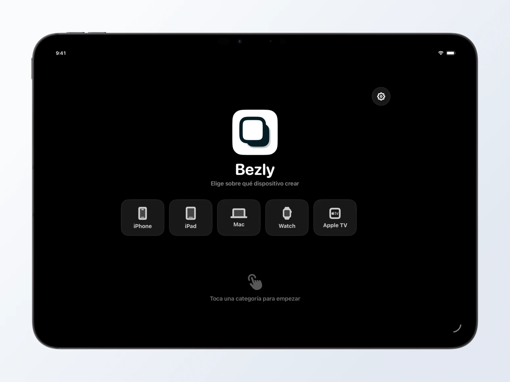
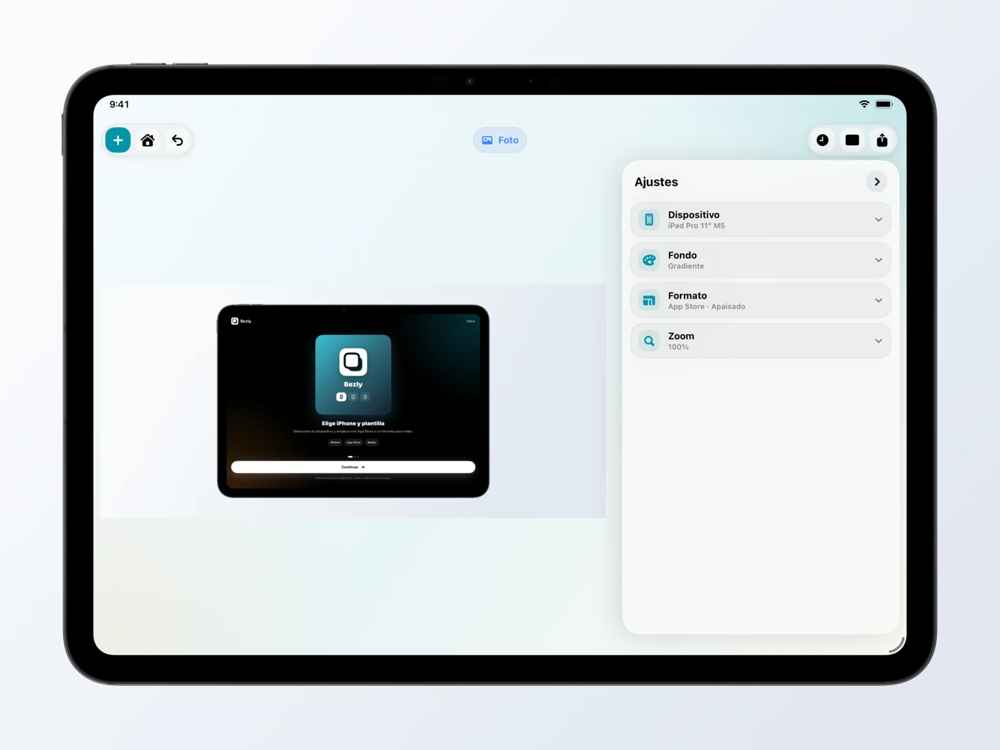
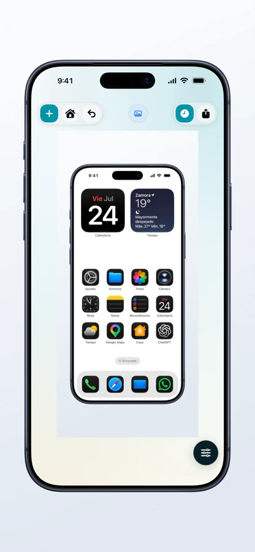
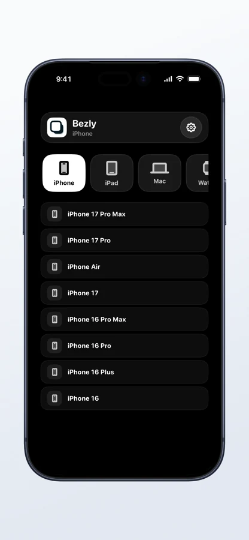
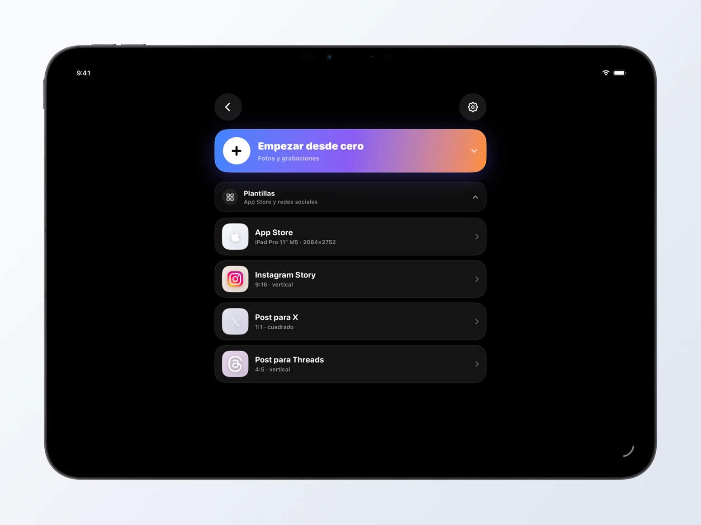
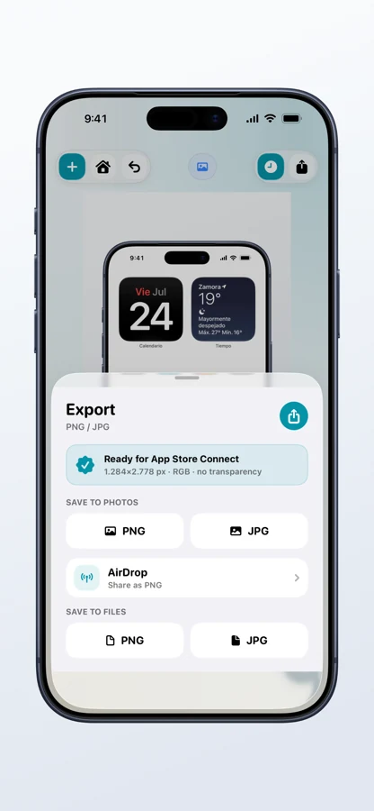

01 / Choose
Start with the right device.
Create for iPhone, iPad, Mac, Apple Watch or Apple TV from a clean, recognizable starting point.
5 device families
Photo & video

Turn screenshots and recordings into polished device mockups, right on your iPhone and iPad. From the first frame to the final export.
Made for iPhone & iPad


Make it yours. iPhone + iPadThe idea
A complete mockup studio, wherever your ideas happen. Choose a device, make the composition your own and export an asset ready for the App Store or your next post.
01 / Choose
Create for iPhone, iPad, Mac, Apple Watch or Apple TV from a clean, recognizable starting point.

02 / Frame
Choose the device model that fits your project. Make your app feel at home in a frame made for it.

03 / Compose
Start with a template, then make it your own. Bring a screenshot or screen recording into the composition.

04 / Make it yours
Adjust the frame, background and layout. Keep your status bar or use a clean 9:41. Choose a solid, gradient, image or transparent background.
05 / Share
Export your final composition, a transparent PNG or RGB assets in App Store Connect dimensions. All from the same device.

Privacy, by design
Editing and export happen on your device. You don’t need to upload your content to a server to create a mockup.
Read the privacy policy ↗